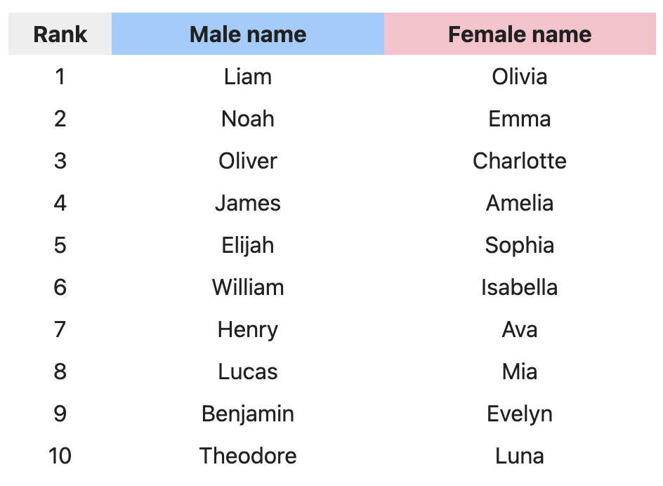

Code
library(here)
library(tidyverse)
library(ggplot2)In this page, I will analyze a dataset about counts of baby names in a given time period.
Question: What are the most popular baby names in year 2000? What are the most popular baby names between 1995 to 2004? What is the trend of the counts of baby names around 2000?
Audience: The intended audience for this analysis is anyone who’s interested in popularity of baby names.
Dataset: I obtained the original dataset from tidytuesday (Community 2023).
Data dictionary: I referred to this data dictionary from tidytuesday.
rds_files <- c("babyname.RDS")
## Check whether we have input files
if (any(!file.exists(here("data", rds_files)))) {
## If we don't, then download the data
baby_names <- readr::read_csv("https://raw.githubusercontent.com/rfordatascience/tidytuesday/master/data/2022/2022-03-22/babynames.csv")
## Then save the data objects to RDS files
saveRDS(baby_names, file = here("data", "baby_names.RDS"))
}
# load the datasets
baby_names <- readRDS(here("data", "baby_names.RDS"))# select top 10 baby names from each year by sex
baby_names_wrangled <- baby_names %>%
select(year, name, sex, n) %>%
filter(year >= 1995 & year < 2005) %>%
mutate(count = n/1000) %>%
filter(count > 10) %>%
arrange(desc(count)) %>%
group_by(sex, year) %>%
slice_head(n = 10)
# calculate the total number of counts for each baby name
baby_names_sum <- baby_names_wrangled %>%
group_by(name, sex) %>%
summarise(
total_count = sum(count)
) %>%
arrange(desc(total_count))
# count the number of times each baby name makes to the top 10 list
baby_names_freq <- baby_names_wrangled %>%
group_by(name) %>%
mutate(nyear = n()) baby_names_wrangled %>%
filter(year==2000) %>%
ggplot(aes(count, fct_reorder(.f = name, .x = count), fill = sex)) +
facet_wrap(~sex, nrow=2, scales="free_y") +
geom_bar(stat="identity", na.rm=TRUE) +
scale_fill_manual(values = c("#FAAB18", "#1380A1")) +
labs(title = "The Top 10 Most Popular Baby Names by Sex in 2000", subtitle = str_wrap("In Year 2000, the most popular girl baby name is Emily. The most popular boy baby name is Jacob.", 60), caption = "Yuhan Xiao", x = "count (in thousands)", y = "baby name", fill = "sex") +
theme_minimal(base_size = 14) +
theme(plot.title = element_text(hjust = 0.5, vjust = 1, size = 15),
plot.subtitle = element_text(hjust = 0.5),
axis.text.x = element_text(angle = 0, hjust = 1),
plot.background = element_rect(fill = "white"),
text = element_text(family = "Times"))From the above data analysis, I found the top 10 most popular baby names by sex in 2000, as shown in the margin.
From Social Security, I obtained the following table of the top 10 most popular baby names by sex in 2022.

As we can see, there is no overlapping between two tables. The popularity of baby names has drastically changed after about two decades.
| Rank | Female_name | Male_name |
|---|---|---|
| 1 | Emily | Jacob |
| 2 | Hannah | Michael |
| 3 | Madison | Matthew |
| 4 | Ashley | Joshua |
| 5 | Sarah | Christopher |
| 6 | Alexis | Nicholas |
| 7 | Samantha | Andrew |
| 8 | Jessica | Joseph |
| 9 | Elizabeth | Daniel |
| 10 | Taylor | Tyler |
baby_names_sum %>%
head(10) %>%
ggplot(aes(total_count, fct_reorder(.f = name, .x = total_count), fill = fct_reorder2(sex, total_count, name))) +
geom_bar(stat="identity") +
scale_fill_manual(values = c("#1380A1", "#FAAB18")) +
labs(title = "The Top 10 Most Popular Baby Names in 1995-2004", subtitle = str_wrap("There are more counts of boy baby names than girl baby names overall.", 60), caption = "Yuhan Xiao", x = "count (in thousands)", y = "baby name", fill = "sex") +
theme_minimal(base_size = 14) +
theme(plot.title = element_text(hjust = 0.5, vjust = 1, size = 15),
plot.subtitle = element_text(hjust = 0.5),
axis.text.x = element_text(angle = 0, hjust = 1),
plot.background = element_rect(fill = "white"),
text = element_text(family = "Times"))From the sex ratio trend above, we can see that overall there were more male births than female births. It might partially explain the difference between the counts of boy baby names and girl baby names.
In addition, there are more girl baby names than boy baby names as the table shown in the margin. It means boy are more likely to share a common name than girls.
| sex | n_names |
|---|---|
| F | 67046 |
| M | 40927 |
baby_names_freq %>%
filter(nyear >= 10) %>%
ggplot(aes(year, count, color=name)) +
facet_wrap(~name, nrow=3, scale="fixed") +
geom_point() +
geom_line() +
labs(title = "The Total Count of Consistently Popular Baby Names in 1995-2004", subtitle = str_wrap("Nine baby names consistently made it on the top 10 list every year from 1995 to 2004.", 60), caption = "Yuhan Xiao", x = "year", y = "count (in thousands)") +
theme_minimal(base_size = 14) +
theme(plot.title = element_text(hjust = 0.5, vjust = 1, size = 15),
plot.subtitle = element_text(hjust = 0.5),
axis.text.x = element_text(angle = 45, hjust = 1),
plot.background = element_rect(fill = "white"),
text = element_text(family = "Times"))While most names became less popular as the years passed, Emily remained consistently favored throughout this time period. It is historically associated with profound meanings. Famous individuals named Emily, coupled with its prevalence in pop culture, have likely influenced parents to choose the same name for their own children (Betsy Shaw, n.d.).
The overall counts of popular boy baby names exceeded those of popular girl baby names between 1995 and 2004. It could potentially be explained by the higher male birth rates and a more diverse pool of girl baby names. With the exception of Emily, most names experienced a decline in popularity during this time period. Over time, new names have become more favored by parents and replaced old popular names after a few years. To some extent, popular baby names might capture the then-current popular culture and celebrity influence.
tidyr: pivot_wider()dplyr: select(), filter(), mutate(), arrange(), group_by(),slice_head(), summarise(), rename()ggplot2: geom_bar(), geom_point(), geom_line()